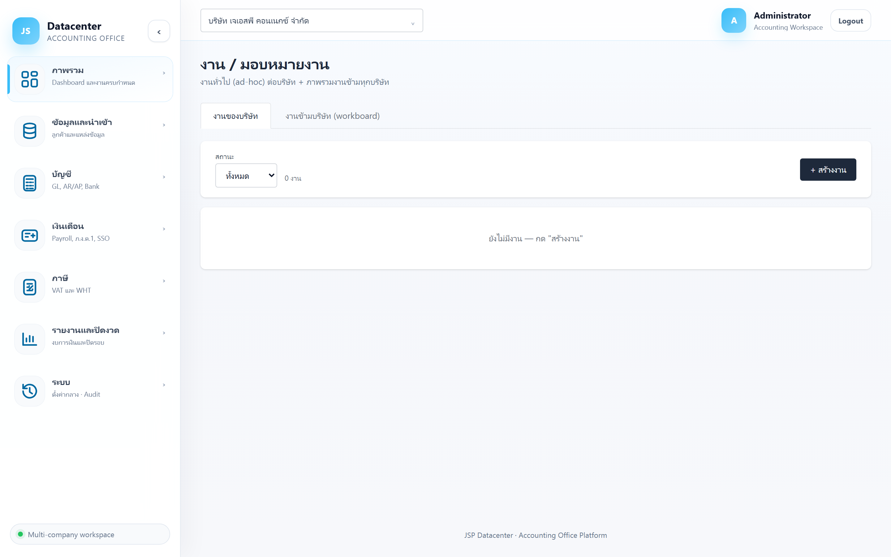
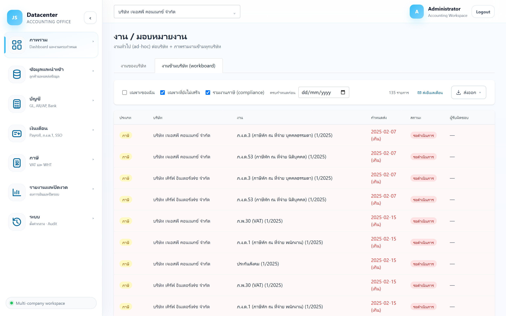
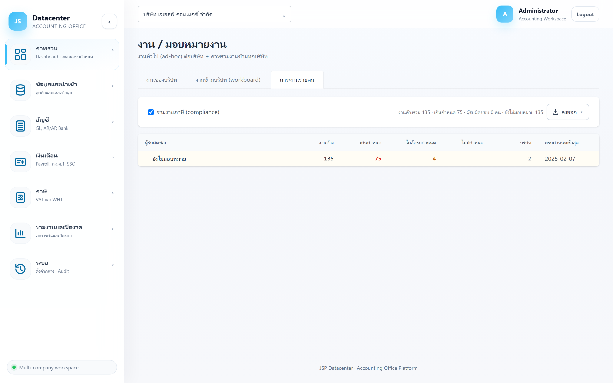

งาน / มอบหมายงาน
งานทั่วไปที่ไม่ใช่งานยื่นภาษีประจำ — มอบหมายให้พนักงาน ตั้งกำหนดส่ง ทำ checklist ย่อย ตั้งให้ทำซ้ำเป็นงานประจำ และดูภาพรวมงานข้ามทุกบริษัทในที่เดียว
งานประจำ (ภาษี) = ระบบสร้างให้ตามปฏิทิน ดูที่ ปฏิทินงาน · งานทั่วไป = สร้างเองที่หน้านี้ เช่น “ขอเอกสารจากลูกค้า”, “ตรวจสต๊อกปลายปี”, “นัดประชุมผู้สอบบัญชี”
1. การเข้าใช้งาน
เปิดเมนู ภาพรวม → งาน / มอบหมายงาน — มี 3 แท็บ
| แท็บ | ใช้เมื่อไร |
|---|---|
| งานของบริษัท | สร้าง/แก้ไข/มอบหมายงานของบริษัทที่เลือกอยู่ (ต้องเลือกบริษัทก่อน) |
| งานข้ามบริษัท (workboard) | ดูงานของ ทุกบริษัทที่คุณมีสิทธิ์ รวมกันในตารางเดียว (ไม่ต้องเลือกบริษัท) |
| ภาระงานรายคน | สรุปว่า ใครถือกี่งาน เกินกำหนดกี่งาน ข้ามทุกบริษัท — มุมมองของหัวหน้า/เจ้าของกิจการ |
2. แท็บ “งานของบริษัท”

| คอลัมน์ | ความหมาย |
|---|---|
| ชื่องาน | ชื่องาน — กดเพื่อกาง checklist ย่อย (ถ้ามี) |
| หมวด | หมวดที่จัดไว้ตอนสร้าง ใช้จัดกลุ่มงาน |
| ความสำคัญ | ต่ำ / ปกติ / สูง |
| กำหนดส่ง | วันครบกำหนด — เลยกำหนดจะเน้นสีแดง |
| สถานะ | เปลี่ยนได้จากตารางโดยตรง (ดูตารางสถานะด้านล่าง) |
| ผู้รับผิดชอบ | เลือกผู้รับผิดชอบได้จากตารางโดยตรง — เลือกจากผู้ใช้ที่มีสิทธิ์ในบริษัทนั้น |
| แก้ไข / ลบ | ปุ่มท้ายแถว |
| สถานะงาน | ความหมาย |
|---|---|
| เปิด/รอทำ | สร้างแล้วยังไม่เริ่ม |
| กำลังทำ | อยู่ระหว่างดำเนินการ |
| เสร็จสิ้น | ทำเสร็จแล้ว |
| ยกเลิก | ไม่ต้องทำแล้ว — เก็บไว้เป็นประวัติ ไม่ใช่การลบ |
ระบบถามยืนยันก่อนลบ และบันทึกลง ประวัติการใช้งาน (audit trail) เสมอ — ถ้าแค่ไม่ต้องทำแล้ว แนะนำเปลี่ยนสถานะเป็น ยกเลิก แทนการลบ จะตามย้อนหลังง่ายกว่า
3. สร้าง / แก้ไขงาน
กด + สร้างงาน (หรือ แก้ไข ที่ท้ายแถว) จะเปิดฟอร์ม
| ช่อง | คำอธิบาย |
|---|---|
| ชื่องาน | ชื่อสั้น ๆ ที่อ่านแล้วรู้ว่าต้องทำอะไร |
| รายละเอียด | คำอธิบายเพิ่มเติม |
| หมวด | กลุ่มของงาน เช่น “เอกสาร”, “ปิดงบ” |
| ความสำคัญ | ต่ำ / ปกติ / สูง |
| กำหนดส่ง | วันครบกำหนด — ใช้จัดลำดับและใช้ส่งอีเมลเตือน |
| ผู้รับผิดชอบ | เลือกผู้ใช้ หรือ “— ไม่ระบุ —” ไว้ก่อน |
| ทำซ้ำ (งานประจำ) | ไม่ซ้ำ / รายวัน / รายสัปดาห์ / รายเดือน / รายปี |
| ทุก ๆ (จำนวนรอบ) | ใช้คู่กับความถี่ เช่น รายเดือน + ทุก ๆ 3 = ทุกไตรมาส |
| รายการย่อย (checklist) | แตกงานเป็นขั้นย่อย ๆ ติ๊กทีละข้อได้จากตารางหลังสร้างแล้ว |
เหมาะกับงานที่วนทุกงวดแต่ไม่ใช่งานภาษี เช่น “กระทบยอดธนาคารประจำเดือน”, “ขอสำเนา statement” — ตั้งครั้งเดียว ระบบสร้างรอบถัดไปให้เมื่อปิดงานรอบปัจจุบัน
4. แท็บ “งานข้ามบริษัท (workboard)”
รวมงานจากทุกบริษัทที่คุณมีสิทธิ์เข้าถึงไว้ในตารางเดียว — เหมาะกับหัวหน้างานหรือคนที่ดูแลหลายบริษัท

| ตัวกรอง | ความหมาย |
|---|---|
| ผู้รับผิดชอบ | เลือกดูรายคนได้ — ทุกคน · เฉพาะของฉัน · ยังไม่มอบหมาย หรือเลือกชื่อคนใดคนหนึ่ง (รายชื่อมาจากผู้รับผิดชอบที่ปรากฏในงานชุดนั้น) |
| เฉพาะที่ยังไม่เสร็จ | ซ่อนงานที่ปิดแล้ว (เปิดไว้เป็นค่าตั้งต้น) |
| รวมงานภาษี (compliance) | รวมงานประจำจากปฏิทินงานเข้ามาด้วย (เปิดไว้เป็นค่าตั้งต้น) — ปิดเพื่อดูเฉพาะงานทั่วไป |
| ครบกำหนดก่อน | เลือกวันที่ เพื่อดูเฉพาะงานที่ครบกำหนดก่อนวันนั้น |
| คอลัมน์เพิ่ม | ความหมาย |
|---|---|
| ประเภท | บอกว่าเป็นงานทั่วไป หรืองานภาษีจากปฏิทิน |
| บริษัท | บริษัทเจ้าของงานนั้น |
workboard แสดงงานของทุกบริษัท — แต่งานของบริษัทที่คุณไม่ได้เป็นผู้ดูแลจะดูได้อย่างเดียว (มอบหมาย/ปิดงานไม่ได้)
5. แท็บ “ภาระงานรายคน”
ตอบคำถาม “ใครค้างงานอะไร และค้างกี่ชิ้น” ในหน้าจอเดียว — รวมงานที่ยังไม่เสร็จของทุกบริษัท แล้วนับแยกตามผู้รับผิดชอบ

| คอลัมน์ | ความหมาย |
|---|---|
| ผู้รับผิดชอบ | ชื่อผู้ที่ถืองานอยู่ — แถว “— ยังไม่มอบหมาย —” อยู่ท้ายสุดเสมอ (พื้นสีเหลือง) |
| งานค้าง | งานที่ยังไม่เสร็จทั้งหมดของคนนั้น |
| เกินกำหนด | เลยกำหนดแล้ว — แสดงเป็น สีแดง |
| ใกล้ครบกำหนด | จะครบกำหนดภายใน 7 วัน (ยังไม่เกิน) |
| ไม่มีกำหนด | งานที่ไม่ได้ตั้งวันครบกำหนด — ควรตามให้ตั้ง ไม่งั้นไม่มีใครเตือน |
| บริษัท | งานของคนนั้นกระจายอยู่กี่บริษัท |
| ครบกำหนดเร็วสุด | งานที่ใกล้ถึงกำหนดที่สุดของคนนั้น |
บรรทัดสรุปด้านบนบอก งานค้างรวม · เกินกำหนด · จำนวนผู้รับผิดชอบ · จำนวนที่ยังไม่มอบหมาย และติ๊ก รวมงานภาษี (compliance) ออกได้ถ้าอยากดูเฉพาะงานทั่วไป
แปลว่างานส่วนใหญ่ยังไม่มีเจ้าภาพ — ไปตั้ง เจ้าหน้าที่บัญชีที่รับผิดชอบประจำ ให้แต่ละบริษัทที่ ข้อมูลลูกค้า แล้วมอบหมายงานที่ค้างอยู่ที่ ปฏิทินงาน
ต้นเดือน — ดูว่าภาระกระจายกันหรือกองที่คนเดียว · กลางเดือน — ดูว่าใครเริ่มเกินกำหนด · กดส่งออกเก็บเป็นหลักฐานการติดตามงานได้
6. ส่งอีเมลเตือน
ปุ่ม ✉ ส่งอีเมลเตือน ส่งอีเมลแจ้งผู้รับผิดชอบเรื่องงานค้างและงานใกล้ครบกำหนด ของทุกบริษัท
ระบบถามยืนยันก่อนส่ง เมื่อส่งเสร็จจะสรุปให้ว่า ส่งสำเร็จกี่ราย · ข้ามกี่ราย · ล้มเหลวกี่ราย (ข้าม = ผู้รับผิดชอบไม่มีอีเมล หรือไม่มีงานที่เข้าเงื่อนไข) — เป็นการส่งจริง ไม่ใช่ตัวอย่าง
7. ปัญหาที่พบบ่อย
| อาการ | สาเหตุและวิธีแก้ |
|---|---|
| ขึ้น “เลือกบริษัทที่ header ก่อน” | แท็บ “งานของบริษัท” ต้องเลือกบริษัทก่อน — หรือสลับไปแท็บ workboard ที่ไม่ต้องเลือก |
| ช่องผู้รับผิดชอบไม่มีชื่อที่ต้องการ | ผู้ใช้คนนั้นยังไม่ได้รับสิทธิ์เข้าถึงบริษัทนี้ — ตั้งที่เมนูระบบ → ผู้ใช้งานระบบ |
| ภาระงานรายคนขึ้นแต่ “ยังไม่มอบหมาย” | งานภาษียังไม่ถูกมอบหมาย — ตั้งผู้รับผิดชอบประจำที่ข้อมูลลูกค้า แล้วสร้างงานเดือนใหม่ หรือมอบหมายงานเดิมที่ปฏิทินงาน |
| งานหายไปจาก workboard | ตัวกรอง “เฉพาะที่ยังไม่เสร็จ” เปิดอยู่ และงานถูกปิดไปแล้ว — ติ๊กออกเพื่อดูงานที่เสร็จแล้ว |
| ไม่อยากเห็นงานภาษีปนใน workboard | ติ๊ก “รวมงานภาษี (compliance)” ออก |
| ส่งอีเมลเตือนแล้วมีรายการ “ข้าม” | ผู้รับผิดชอบยังไม่มีอีเมลในระบบ — เพิ่มที่เมนูระบบ → ผู้ใช้งานระบบ |
งานที่มอบหมายให้คุณจะขึ้นที่กล่อง “งานของฉัน” บน Dashboard →